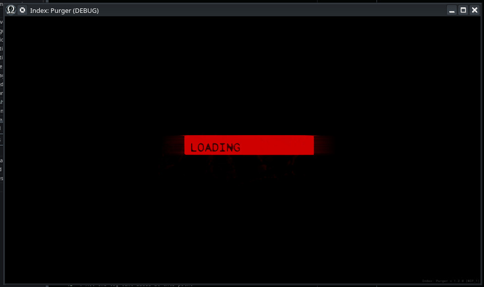

Module: game_start
Documentation last edited: October 22, 2025 at 10:46 UTC
Description
Экран запуска игры, который вы видите во время загрузки игровых файлов. Обрабатывает следующие случаи:
- Загрузка пакетов ресурсов
- Инициализация модов
- Инициализация системы
- Анимации загрузочного экрана
- Проверки достижений для специальных условий

Если вы хотите отредактировать сцену запуска игры, откройте:
"res://locations/scenes/game_start.scn"
General Information
Root directories list
assets, docs, src
Nodes
game_start
game_start_anim
GameStartAutoloadInit
game_start_nums
Classes
None
Resources
None
Other Scripts
None